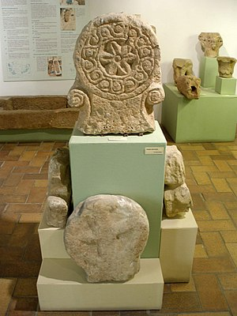
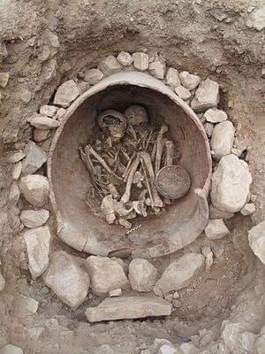
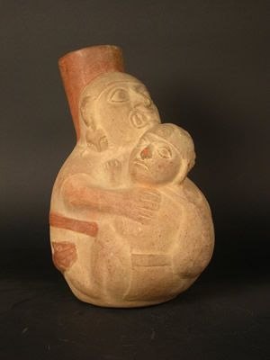

¿Por qué elegirnos?
Somos una empresa colombiana especializada en arqueología e investigación del patrimonio cultural y natural. Combinamos experiencia profesional con tecnología contemporánea para ofrecer soluciones integrales.
Experiencia
Contamos con un equipo de profesionales especializados en arqueología, patrimonio cultural y gestión de proyectos integrales en Colombia.
Compromiso
Trabajamos junto a las comunidades locales para garantizar el respeto, la preservación y la puesta en valor del patrimonio cultural y natural del país.
Innovación
Integramos conocimientos históricos tradicionales con avances tecnológicos contemporáneos para ofrecer resultados confiables y sostenibles.
Nuestro trabajo
Cada proyecto es una oportunidad de preservar la memoria colectiva de nuestras comunidades.

Investigación arqueológica

Trabajo de campo

Análisis de hallazgos
Lo que dicen de nosotros
Trabajamos con instituciones públicas y privadas que confían en nuestra experiencia.
"El equipo de ARPIN demostró gran profesionalismo durante todo el proceso de prospección arqueológica. Sus resultados fueron determinantes para nuestro proyecto."
Carlos Mendoza
Director de obra, constructora privada
"Su conocimiento del patrimonio cultural colombiano y su capacidad de gestión hicieron posible que nuestro proyecto cumpliera todos los requisitos legales."
Andrés Villanueva
Coordinador, entidad pública
"Gracias a ARPIN pudimos identificar y preservar hallazgos de gran valor histórico para nuestra región. Un trabajo riguroso y comprometido."
Patricia Salcedo
Investigadora, universidad pública